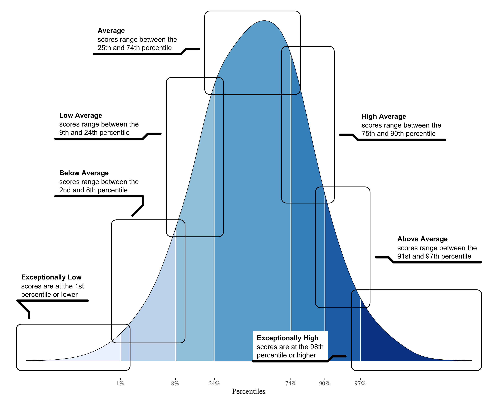

Distribution of Scores: Population-level Interpretation

Figure 1: Statistical classification of neuropsychological test scores in the general population.
Neuropsych Drilldown: z-Scores (M = 0, SD = 1)